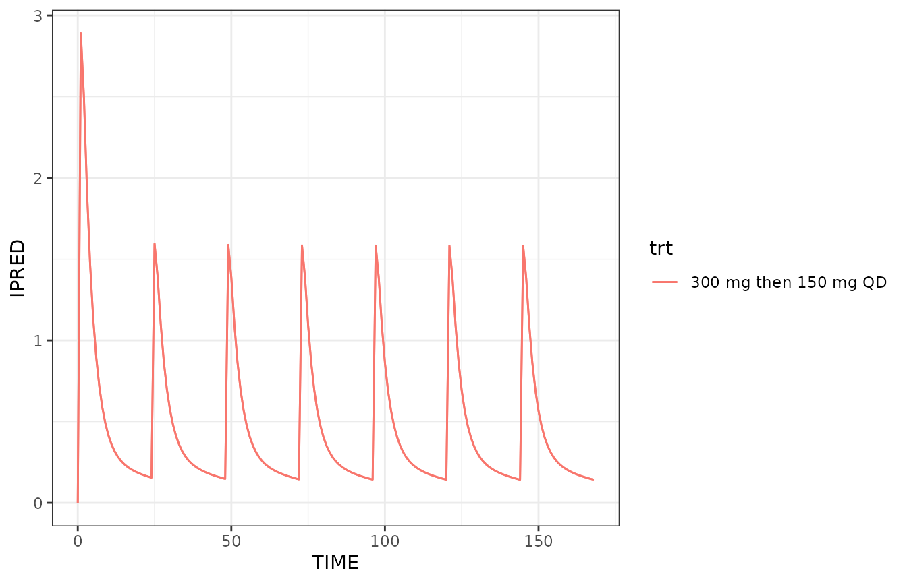

This document is retired
This work has been integrated into NMsim-intro.html
and is no longer maintained.
Objectives
This vignettes aims at enabling you to use NMsim for the
following purposes
- Simulation of typical subjects
Simulation of a typical subject
A typical subject is here understood as a subject without random
effects, i.e. all ETA’s equal zero. It is important to realize that
“typical” does not have to do with covariates which the user will still
need to control in the model, in the simulation input data, or by a
combination of these. Getting NMsim to run with all ETA’s
equaling zero is this easy:
simres.typ <- NMsim(file.mod=file.mod,
data=dat.sim,
name.sim="typSubj",
typical=TRUE)In the first simulation we used PRED from the default
simulation method to get a typical subject simulation. That will work in
many cases, but that depends on the model. The way to run a simulation
with all ETA’s set to 0 is using
method.sim=NMsim_typical.
